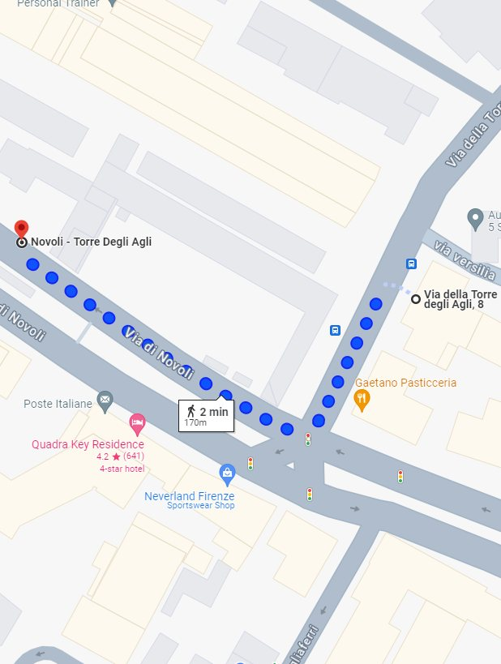
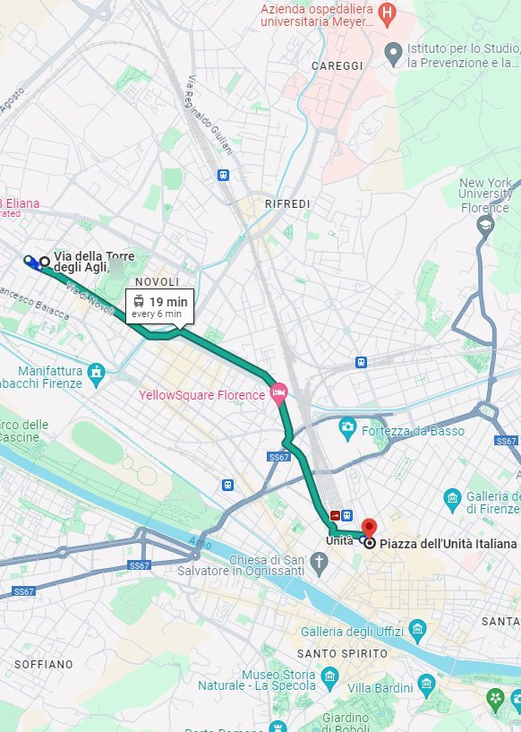
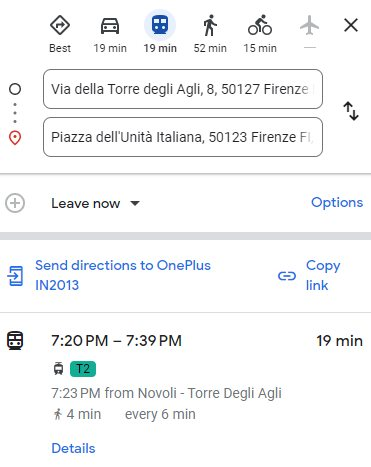
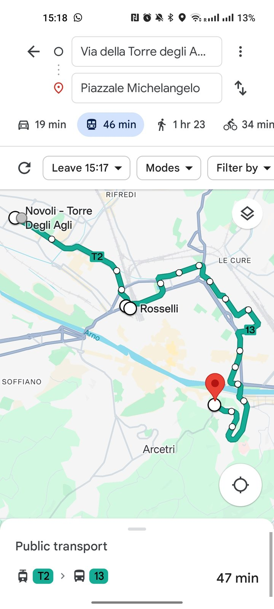
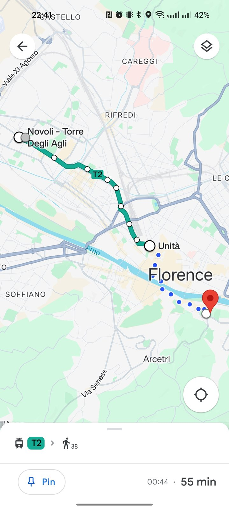
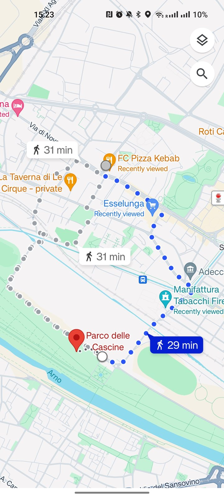
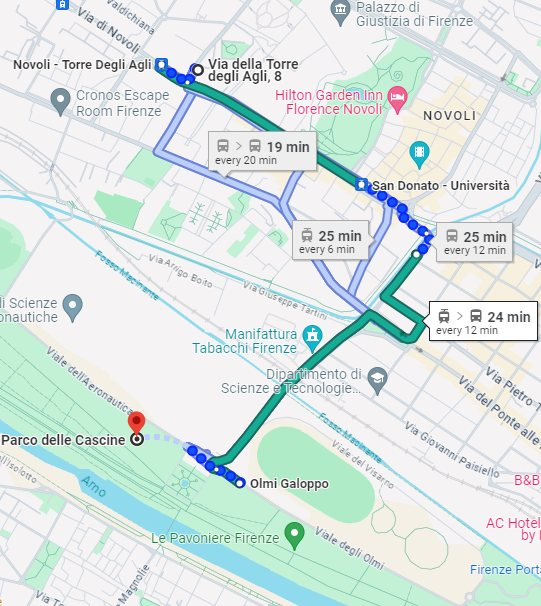
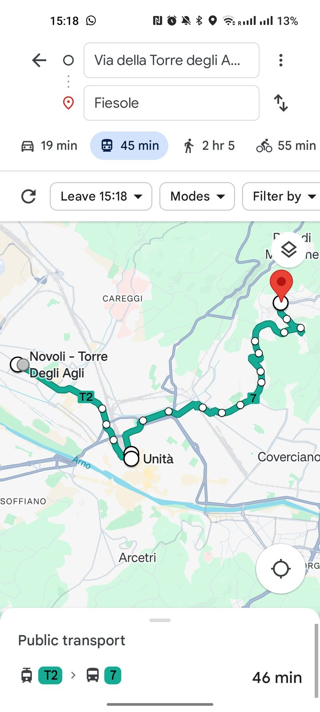

Public transport
How to reach the historic centre and other places of interest by public transport.
Nearest tram stop
- The nearest tram stop is Novoli – Torre degli Agli, a 2-minute walk from the apartment. When you leave the building, head left along Via della Torre degli Agli, turn right into Via di Novoli and cross the street to reach the stop.
- Tram tickets are sold at the automatic machines at every stop. Buy your ticket before boarding and validate it when you get on: from that moment it is valid for 90 minutes, including further rides within that time.
- More information about the tram network on the operator’s website: gestramvia.it
- 19 minutes to Santa Maria Novella train station.
- 19 minutes to the city centre.

To the historic centre
- The vibrant heart of the city, rich in art and history, with masterpieces such as the Duomo, Ponte Vecchio and the Uffizi Gallery.
- Reach the tram stop and take Tram T2 from Novoli – Torre degli Agli to Unità, next to Santa Maria Novella train station. The ride takes about 19 minutes, with trams every 6 minutes.
- When you get off, take a moment to admire the Basilica of Santa Maria Novella and its square before exploring the historic centre.


To Piazzale Michelangelo
- A panoramic terrace with a breathtaking view of Florence, dominated by one of the famous copies of Michelangelo’s David, with the ancient abbey of San Miniato al Monte a short walk away.
- Take Tram T2 from Novoli – Torre degli Agli to Unità (about 19 minutes, trams every 6 minutes).
- From Unità, walk 2 minutes to the Fratelli Rosselli bus stop and take bus 13 to Piazzale Michelangelo.

- Alternatively, you can walk to Piazzale Michelangelo from Unità: about half an hour through some of the city’s most beautiful areas.

To Parco delle Cascine
- The largest urban park in Florence, along the Arno river: ideal for walks, sport and relaxation, with green spaces and cultural events.
- Rock lover? Don’t miss Firenze Rocks, Italy’s largest music festival, held every year in June right in the Parco delle Cascine, at the Visarno Arena.
- On foot: about half an hour from the apartment, passing points of interest such as the Puccini Theatre and the Manifattura Tabacchi, a former tobacco factory turned cultural and creative space with events, exhibitions and innovative projects.

- Tram + bus: take Tram T2 from Novoli – Torre degli Agli to San Donato – Università. From there walk to the Redi San Donato bus stop and take bus 55 to Olmi Galoppo.

To Fiesole
- An ancient hilltop town near Florence, known for its Etruscan and Roman remains and its splendid views over the Arno valley.
- Take Tram T2 from Novoli – Torre degli Agli to Unità (about 19 minutes, trams every 6 minutes).
- From Unità, walk 2 minutes to the Stazione Nazionale bus stop and take bus 7 to Fiesole.

Trasporti pubblici
Come raggiungere il centro storico e altri luoghi d’interesse con i mezzi pubblici.
Fermata del tram più vicina
- La fermata più vicina è Novoli – Torre degli Agli, a 2 minuti a piedi dall’appartamento. Uscendo dal portone vai a sinistra lungo Via della Torre degli Agli, gira a destra in Via di Novoli e attraversa la strada per raggiungere la fermata.
- I biglietti si comprano alle macchinette automatiche presenti a ogni fermata. Compra il biglietto prima di salire e timbralo appena sali: da quel momento vale 90 minuti, anche per altre corse entro quel tempo.
- Maggiori informazioni sulla rete tranviaria sul sito del gestore: gestramvia.it
- 19 minuti per la stazione di Santa Maria Novella.
- 19 minuti per il centro città.
Per il centro storico
- Cuore pulsante della città, ricco di arte e storia, con capolavori come il Duomo, Ponte Vecchio e la Galleria degli Uffizi.
- Raggiungi la fermata e prendi il Tram T2 da Novoli – Torre degli Agli fino a Unità, accanto alla stazione di Santa Maria Novella. Il viaggio dura circa 19 minuti, con tram ogni 6 minuti.
- Appena sceso, prenditi un momento per ammirare la Basilica di Santa Maria Novella e la sua piazza, prima di esplorare il centro storico.
Per Piazzale Michelangelo
- Terrazza panoramica con una vista mozzafiato su Firenze, dominata da una delle famose copie del David di Michelangelo, con l’antica abbazia di San Miniato al Monte a due passi.
- Prendi il Tram T2 da Novoli – Torre degli Agli fino a Unità (circa 19 minuti, tram ogni 6 minuti).
- Da Unità, in 2 minuti a piedi raggiungi la fermata del bus Fratelli Rosselli e prendi il bus 13 fino a Piazzale Michelangelo.
- In alternativa puoi arrivare a Piazzale Michelangelo a piedi da Unità: circa mezz’ora attraverso alcune delle zone più belle della città.
Per il Parco delle Cascine
- Il più grande parco urbano di Firenze, lungo l’Arno: ideale per passeggiate, sport e relax, con spazi verdi ed eventi culturali.
- Ami il rock? Non perderti il Firenze Rocks, il più grande festival musicale d’Italia, che si tiene ogni anno a giugno proprio al Parco delle Cascine, alla Visarno Arena.
- A piedi: circa mezz’ora dall’appartamento, passando da punti d’interesse come il Teatro Puccini e la Manifattura Tabacchi, ex fabbrica di tabacco trasformata in spazio culturale e creativo con eventi, mostre e progetti innovativi.
- Tram + bus: prendi il Tram T2 da Novoli – Torre degli Agli fino a San Donato – Università. Da lì raggiungi a piedi la fermata del bus Redi San Donato e prendi il bus 55 fino a Olmi Galoppo.
Per Fiesole
- Antico borgo collinare vicino a Firenze, noto per i resti etruschi e romani e per le splendide vedute sulla valle dell’Arno.
- Prendi il Tram T2 da Novoli – Torre degli Agli fino a Unità (circa 19 minuti, tram ogni 6 minuti).
- Da Unità, in 2 minuti a piedi raggiungi la fermata del bus Stazione Nazionale e prendi il bus 7 fino a Fiesole.
Transporte público
Cómo llegar al centro histórico y a otros lugares de interés en transporte público.
Parada de tranvía más cercana
- La parada más cercana es Novoli – Torre degli Agli, a 2 minutos a pie del apartamento. Al salir del portal ve a la izquierda por Via della Torre degli Agli, gira a la derecha en Via di Novoli y cruza la calle para llegar a la parada.
- Los billetes se compran en las máquinas automáticas de cada parada. Compra el billete antes de subir y valídalo al entrar: desde ese momento es válido durante 90 minutos, también para otros trayectos dentro de ese tiempo.
- Más información sobre la red de tranvías en la web del operador: gestramvia.it
- 19 minutos a la estación de Santa Maria Novella.
- 19 minutos al centro de la ciudad.
Al centro histórico
- El corazón de la ciudad, lleno de arte e historia, con maravillas como el Duomo, el Ponte Vecchio y la Galería de los Uffizi.
- Llega a la parada y toma el Tranvía T2 desde Novoli – Torre degli Agli hasta Unità, junto a la estación de Santa Maria Novella. El trayecto dura unos 19 minutos, con tranvías cada 6 minutos.
- Al bajar, tómate un momento para admirar la Basílica de Santa Maria Novella y su plaza antes de explorar el centro histórico.
A Piazzale Michelangelo
- Un mirador panorámico con vistas impresionantes de Florencia, dominado por una de las famosas copias del David de Miguel Ángel, con la antigua abadía de San Miniato al Monte a pocos pasos.
- Toma el Tranvía T2 desde Novoli – Torre degli Agli hasta Unità (unos 19 minutos, tranvías cada 6 minutos).
- Desde Unità, camina 2 minutos hasta la parada de autobús Fratelli Rosselli y toma el autobús 13 hasta Piazzale Michelangelo.
- Alternativamente, puedes llegar a Piazzale Michelangelo a pie desde Unità: aproximadamente media hora por algunas de las zonas más bonitas de la ciudad.
Al Parque delle Cascine
- El mayor parque urbano de Florencia, a orillas del Arno: ideal para pasear, hacer deporte y relajarse, con zonas verdes y eventos culturales.
- ¿Te gusta el rock? No te pierdas el Firenze Rocks, el mayor festival de música de Italia, que se celebra cada año en junio en el propio Parque delle Cascine, en el Visarno Arena.
- A pie: aproximadamente media hora desde el apartamento, pasando por lugares de interés como el Teatro Puccini y la Manifattura Tabacchi, una antigua fábrica de tabaco convertida en espacio cultural y creativo con eventos, exposiciones y proyectos innovadores.
- Tranvía + autobús: toma el Tranvía T2 desde Novoli – Torre degli Agli hasta San Donato – Università. Desde allí camina hasta la parada de autobús Redi San Donato y toma el autobús 55 hasta Olmi Galoppo.
A Fiesole
- Antiguo pueblo en lo alto de una colina cerca de Florencia, conocido por sus restos etruscos y romanos y por sus espléndidas vistas sobre el valle del Arno.
- Toma el Tranvía T2 desde Novoli – Torre degli Agli hasta Unità (unos 19 minutos, tranvías cada 6 minutos).
- Desde Unità, camina 2 minutos hasta la parada de autobús Stazione Nazionale y toma el autobús 7 hasta Fiesole.
Transports en commun
Comment rejoindre le centre historique et d’autres lieux d’intérêt avec les transports en commun.
Arrêt de tram le plus proche
- L’arrêt le plus proche est Novoli – Torre degli Agli, à 2 minutes à pied de l’appartement. En sortant de l’immeuble, allez à gauche le long de Via della Torre degli Agli, tournez à droite dans Via di Novoli et traversez la rue pour rejoindre l’arrêt.
- Les billets s’achètent aux distributeurs automatiques présents à chaque arrêt. Achetez le billet avant de monter et validez-le dès que vous montez : il est alors valable 90 minutes, y compris pour d’autres trajets dans ce délai.
- Plus d’informations sur le réseau de tram sur le site de l’exploitant : gestramvia.it
- 19 minutes jusqu’à la gare de Santa Maria Novella.
- 19 minutes jusqu’au centre-ville.
Vers le centre historique
- Cœur battant de la ville, riche en art et en histoire, avec des chefs-d’œuvre comme le Duomo, le Ponte Vecchio et la Galerie des Offices.
- Rejoignez l’arrêt et prenez le Tram T2 de Novoli – Torre degli Agli jusqu’à Unità, à côté de la gare de Santa Maria Novella. Le trajet dure environ 19 minutes, avec un tram toutes les 6 minutes.
- À peine descendus, prenez un instant pour admirer la basilique de Santa Maria Novella et sa place, avant d’explorer le centre historique.
Vers le Piazzale Michelangelo
- Terrasse panoramique avec une vue à couper le souffle sur Florence, dominée par l’une des célèbres copies du David de Michel-Ange, avec l’ancienne abbaye de San Miniato al Monte à deux pas.
- Prenez le Tram T2 de Novoli – Torre degli Agli jusqu’à Unità (environ 19 minutes, un tram toutes les 6 minutes).
- Depuis Unità, en 2 minutes à pied vous rejoignez l’arrêt de bus Fratelli Rosselli ; prenez le bus 13 jusqu’à Piazzale Michelangelo.
- Vous pouvez aussi rejoindre le Piazzale Michelangelo à pied depuis Unità : environ une demi-heure à travers certains des plus beaux quartiers de la ville.
Vers le Parc des Cascine
- Le plus grand parc urbain de Florence, le long de l’Arno : idéal pour les promenades, le sport et la détente, avec des espaces verts et des événements culturels.
- Vous aimez le rock ? Ne manquez pas Firenze Rocks, le plus grand festival de musique d’Italie, qui a lieu chaque année en juin justement au Parc des Cascine, à la Visarno Arena.
- À pied : environ une demi-heure depuis l’appartement, en passant par des points d’intérêt comme le Teatro Puccini et la Manifattura Tabacchi, ancienne manufacture de tabac transformée en espace culturel et créatif avec événements, expositions et projets innovants.
- Tram + bus : prenez le Tram T2 de Novoli – Torre degli Agli jusqu’à San Donato – Università. De là, rejoignez à pied l’arrêt de bus Redi San Donato et prenez le bus 55 jusqu’à Olmi Galoppo.
Vers Fiesole
- Ancien bourg sur les collines près de Florence, connu pour ses vestiges étrusques et romains et pour ses splendides vues sur la vallée de l’Arno.
- Prenez le Tram T2 de Novoli – Torre degli Agli jusqu’à Unità (environ 19 minutes, un tram toutes les 6 minutes).
- Depuis Unità, en 2 minutes à pied vous rejoignez l’arrêt de bus Stazione Nazionale ; prenez le bus 7 jusqu’à Fiesole.